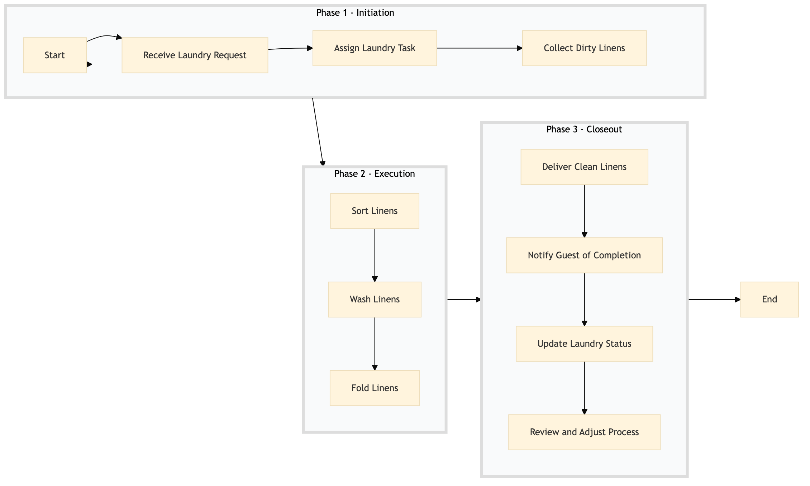

| Role | Steps |
|---|---|
| Front Desk Agent | 1.1 3.2 |
| Housekeeping Supervisor | 1.2 3.3 |
| Housekeeper | 1.3 3.1 |
| Laundry Staff | 2.1 2.2 2.3 |
| Housekeeping Manager | 3.4 |
| Step | Name | Role | System | Input | Output | KPI | Dec? | Exc? | Pain Point / Risk |
|---|---|---|---|---|---|---|---|---|---|
| 1.1 | Receive Laundry Request | Front Desk Agent | Oracle OPERA Cloud | Guest request via phone or online booking platform | Laundry request logged in Oracle OPERA Cloud | Less than 3 minutes to log the request | N | Y | Handling multiple requests simultaneously |
| 1.2 | Assign Laundry Task | Housekeeping Supervisor | Oracle OPERA Cloud | Logged laundry request | Laundry task assigned to a housekeeper | Less than 5 minutes to assign the task | N | Y | Ensuring tasks are evenly distributed among staff |
| 1.3 | Collect Dirty Linens | Housekeeper | Oracle OPERA Cloud | Assigned laundry task | Dirty linens collected and logged in Oracle OPERA Cloud | Less than 10 minutes to collect linens | N | Y | Accessing rooms during busy periods |
| 2.1 | Sort Linens | Laundry Staff | Oracle OPERA Cloud | Collected linens | Sorted linens ready for washing | Less than 15 minutes to sort linens | N | Y | Handling different types of fabrics and colors |
| 2.2 | Wash Linens | Laundry Staff | Oracle OPERA Cloud | Sorted linens | Clean linens ready for folding | Less than 1 hour to wash linens | N | Y | Ensuring proper washing temperatures and cycles |
| 2.3 | Fold Linens | Laundry Staff | Oracle OPERA Cloud | Clean linens | Fitted linens ready for delivery | Less than 30 minutes to fold linens | N | Y | Maintaining consistent folding standards |
| 3.1 | Deliver Clean Linens | Housekeeper | Oracle OPERA Cloud | Fitted linens | Clean linens delivered to guest's room | Less than 20 minutes to deliver linens | N | Y | Handling multiple deliveries simultaneously |
| 3.2 | Notify Guest of Completion | Front Desk Agent | Oracle OPERA Cloud | Delivered linens | Notification sent to guest | Less than 5 minutes to notify the guest | N | Y | Ensuring timely communication with guests |
| 3.3 | Update Laundry Status | Housekeeping Supervisor | Oracle OPERA Cloud | Completed laundry task | Laundry status updated in Oracle OPERA Cloud | Less than 2 minutes to update the status | N | Y | Accurate tracking of laundry tasks |
| 3.4 | Review and Adjust Process | Housekeeping Manager | Oracle OPERA Cloud | Laundry status updates | Process improvements identified and implemented | Less than 1 week to review and adjust the process | Y | N | Continuous improvement of laundry operations |
The Guest Laundry Service process at a Marriott full-service hotel involves handling guest requests for laundry services, ensuring timely collection, processing, and delivery of clean linens.